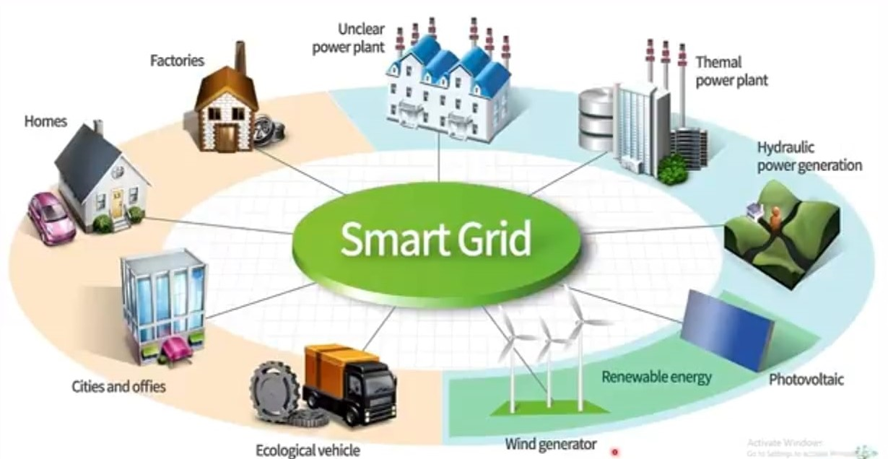

Proposito del sitio
Este sitio busca exponer la temática seleccionada para la actividad individual Redes Inteligentes o mejor conocidas como las Smart Grid.
Simplemente e s un sistema de distribuion Inteligente que controla el suministro de carga y potencia de energia.
Redes Inteligentes
Distribución de energía, tecnologías de la información, consumo equilibrado y responsable.. despliega el menú y conoce Smart Grid.
